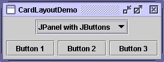
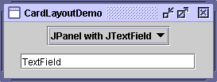
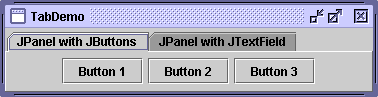

Feedback Form
|
|
Start of Tutorial > Start of Trail > Start of Lesson |
Search
Feedback Form |
Here's a snapshot of an application that uses aCardLayoutto switch between two panels.
 
You can run CardLayoutDemo using JavaTM Web Start
. Its code is in
CardLayoutDemo.java.
The
CardLayoutclass helps you manage two or more components (usuallyJPanelinstances) that share the same display space. When usingCardLayout, you need to provide a way to let the user choose between the components. CardLayoutDemo uses a combo box for this purpose.An easier but less flexible way to accomplish the same task is to use a tabbed pane
 Because a tabbed pane provides its own GUI, using a tabbed pane is simpler than using
CardLayout. For example, reimplementing the preceding example to use a tabbed pane results in a program with fewer lines of code. You can run TabDemo using Java Web StartTabDemo.javaConceptually, each component a
CardLayoutmanages is like a playing card or trading card in a stack, where only the top card is visible at any time. You can choose the card that's showing in any of the following ways:
- By asking for either the first or last card, in the order it was added to the container.
- By flipping through the deck backwards or forwards.
- By specifying a card with a specific name. This is the scheme CardLayoutDemo uses.
The following code from
CardLayoutDemo.javaCardLayoutand the components it manages.When you add a component to a container that a//Where instance variables are declared: JPanel cards; final static String BUTTONPANEL = "JPanel with JButtons"; final static String TEXTPANEL = "JPanel with JTextField"; //Where the components controlled by the CardLayout are initialized: //Create the "cards". JPanel card1 = new JPanel(); ... JPanel card2 = new JPanel(); ... //Create the panel that contains the "cards". cards = new JPanel(new CardLayout()); cards.add(card1, BUTTONPANEL); cards.add(card2, TEXTPANEL);CardLayoutmanages, you must specify a string that identifies the component being added. For example, in this example, the first panel has the string"JPanel with JButtons", and the second panel has the string"JPanel with JTextField". In this example, those strings are also used in the combo box.To choose which component a
CardLayoutshows, you need some additional code. Here's how the example program does this:This example shows that you can use the//Where the GUI is assembled: //Put the JComboBox in a JPanel to get a nicer look. JPanel comboBoxPane = new JPanel(); //use FlowLayout String comboBoxItems[] = { BUTTONPANEL, TEXTPANEL }; JComboBox cb = new JComboBox(comboBoxItems); cb.setEditable(false); cb.addItemListener(this); comboBoxPane.add(cb); ... pane.add(comboBoxPane, BorderLayout.PAGE_START); pane.add(cards, BorderLayout.CENTER); ... public void itemStateChanged(ItemEvent evt) { CardLayout cl = (CardLayout)(cards.getLayout()); cl.show(cards, (String)evt.getItem()); }CardLayoutshowmethod to set the currently showing component. The first argument to theshowmethod is the container theCardLayoutcontrols — that is, the container of the components theCardLayoutmanages. The second argument is the string that identifies the component to show. This string is the same as was used when adding the component to the container.
[PENDING: This section will be converted to use the same API table format as is used in the components lesson.]The following
CardLayoutmethods let you choose a component. For each method, the first argument is the container for which theCardLayoutis the layout manager (the container of the cards theCardLayoutcontrols).void first(Container) void next(Container) void previous(Container) void last(Container) void show(Container, String)
Only one example in this trail usesCardLayout:CardLayoutDemo. Generally, our examples use tabbed panesCardLayout, since tabbed panes conveniently provide a nice GUI for the same functionality.
|
|
Start of Tutorial > Start of Trail > Start of Lesson |
Search
Feedback Form |
Copyright 1995-2004 Sun Microsystems, Inc. All rights reserved.